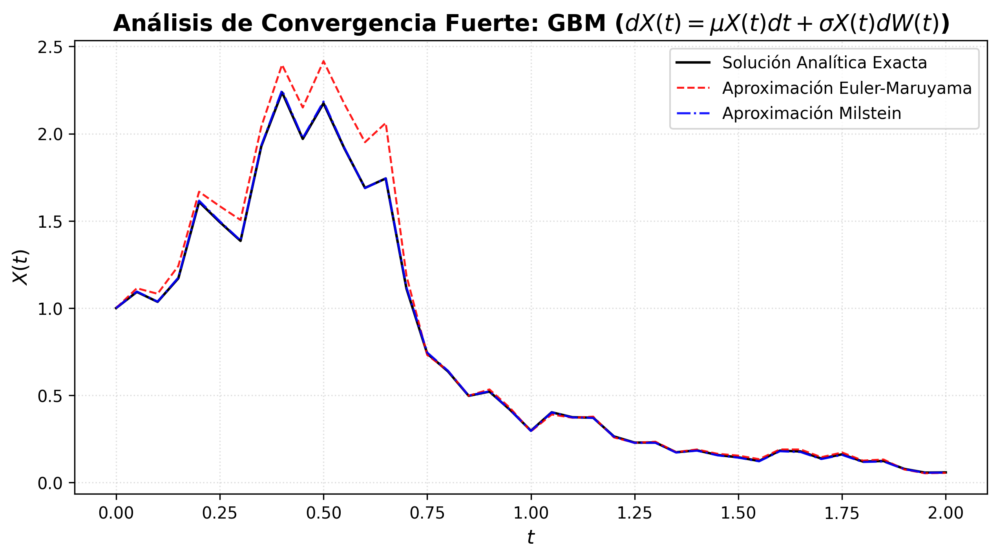

3 Soluciones Numéricas de Ecuaciones Diferenciales Estocásticas
En la práctica, la gran mayoría de las ecuaciones diferenciales estocásticas carecen de una solución analítica explícita debido a la estructura de sus coeficientes o al acoplamiento de múltiples perturbaciones. Por este motivo, resulta necesario recurrir a esquemas de aproximación numérica definidos sobre una discretización temporal. A diferencia del análisis numérico determinista, donde el error de aproximación se evalúa de manera puntual, en el cálculo estocástico la cercanía entre la solución exacta \(X(t)\) y la aproximación numérica \(Y\) debe medirse en media cuadrática o en distribución sobre el espacio de probabilidad \((\Omega, \mathcal{F}, \mathbb{P})\) (Kloeden y Platen 1992).
Para establecer formalmente los criterios de convergencia, consideremos una partición regular del intervalo \([0, T]\), \(P = (t_0, t_1, \dots, t_N)\) compuesta por \(N \in \mathbb{N}\) subintervalos de longitud constante \(\Delta t = \frac{T}{N}\), cuyos nodos temporales están dados por \(t_n = n \Delta t\) para \(n = 0, 1, \dots, N\). Denotaremos por \(Y_n\) al valor de la aproximación discreta en el nodo \(t_n\), y por \(\Delta W_n = W(t_{n+1}) - W(t_n) \sim \mathcal{N}(0, \Delta t)\) al incremento correspondiente del movimiento Browniano estándar.
Definición 3.1 (Convergencia Fuerte) Se dice que una aproximación numérica discreta \(\{Y_n\}_{0 \le n \le N}\), obtenida con un tamaño de paso \(\Delta t > 0\), converge en sentido fuerte con orden \(\gamma > 0\) hacia la solución exacta \(\{X(t)\}_{t \in [0, T]}\) en el tiempo terminal \(T\) si existen constantes positivas \(C > 0\) y \(\delta_0 > 0\), independientes de \(\Delta t\), tales que para todo \(\Delta t \in (0, \delta_0)\) se satisface la siguiente desigualdad:
\[ \mathbb{E}\left[ \vert X(T) - Y_N \vert \right] \le C (\Delta t)^\gamma. \]
Por la desigualdad de Lyapunov (\(\mathbb{E}[\vert X(T) - Y_N \vert] \le (\mathbb{E}[\vert X(T) - Y_N \vert^2])^{1/2}\)), el criterio de la Definición 3.1 suele establecerse demostrando que el error cuadrático medio cumple \(\displaystyle \left(\mathbb{E}\left[\sup_{0 \le t \le T} \vert X(t) - \bar{Y}(t) \vert^2\right]\right)^{1/2} \le C(\Delta t)^\gamma\), donde \(\bar{Y}(t)\) denota la extensión continua del esquema numérico. La convergencia fuerte controla el error promedio trayectoria por trayectoria, por lo que lo hace el criterio adecuado cuando se requiere simular trayectorias individuales del proceso (Wang 2016).
Definición 3.2 (Convergencia Débil) Se dice que una aproximación numérica discreta \(\{Y_n\}_{0 \le n \le N}\) converge en sentido débil con orden \(\beta > 0\) hacia la solución exacta \(\{X(t)\}_{t \in [0, T]}\) en el tiempo terminal \(T\) si, para toda función de prueba \(g \in \mathcal{C}_p^{2(\beta+1)}(\mathbb{R}; \mathbb{R})\) (funciones \(2(\beta+1)\) veces continuamente diferenciables cuyas derivadas parciales tienen crecimiento a lo sumo polinomial), existen constantes positivas \(C > 0\) y \(\delta_0 > 0\), independientes de \(\Delta t\), tales que para todo \(\Delta t \in (0, \delta_0)\) se cumple que:
\[ \left\vert \mathbb{E}[g(X(T))] - \mathbb{E}[g(Y_N)] \right\vert \le C (\Delta t)^\beta. \]
A diferencia del criterio fuerte, la convergencia débil no exige cercanía trayectoria por trayectoria, sino que mide el error en la aproximación de los momentos estadísticos y de los valores esperados de funcionales de la solución (Wang 2016).
3.0.1 Esquema Numérico de Euler-Maruyama
El método de Euler-Maruyama es la generalización directa del método de Euler clásico, al cálculo estocástico de Itô. Consideremos la ecuación diferencial estocástica continua (Ecuación 2.1) expresada su en forma integral sobre el subintervalo \([t_n, t_{n+1}]:\)
\[ X(t_{n+1}) = X(t_n) + \int_{t_n}^{t_{n+1}} b(s, X(s)) ds + \int_{t_n}^{t_{n+1}} \sigma(s, X(s)) dW(s). \]
Aproximando ambos integrandos mediante su evaluación constante en el extremo izquierdo \(s = t_n\), se obtiene la relación recursiva del esquema de Euler-Maruyama:
\[ Y_{n+1} = Y_n + b(t_n, Y_n) \Delta t + \sigma(t_n, Y_n) \Delta W_n, \quad n = 0, 1, \dots, N - 1, \tag{3.1}\]
con condición inicial \(Y_0 = x_0\).
Teorema 3.1 (Teorema de Convergencia del Método de Euler-Maruyama) Sea \(\{X(t)\}_{t \in [0, T]}\) la única solución fuerte de la EDE continua (Ecuación 2.1) con condición inicial \(X(0) = x_0 \in L^2_{\mathcal{F}_0}(\Omega; \mathbb{R})\), y sea \(\{Y_n\}_{0 \le n \le N}\) la aproximación generada por el esquema de Euler-Maruyama (Ecuación 3.1).
- Si los coeficientes \(b(t, x)\) y \(\sigma(t, x)\) satisfacen las condiciones de Lipschitz global y de crecimiento lineal del Teorema 2.3, además de la condición de continuidad temporal \(\vert b(t, x) - b(s, x) \vert + \vert \sigma(t, x) - \sigma(s, x) \vert \le K(1 + \vert x \vert)\vert t - s \vert^{1/2}\), entonces el esquema de Euler-Maruyama converge en sentido fuerte con orden \(\gamma = 0.5\): \[ \left( \mathbb{E}\left[ \sup_{0 \le n \le N} \vert X(t_n) - Y_n \vert^2 \right] \right)^{1/2} \le C (\Delta t)^{1/2}. \]
- Si adicionalmente los coeficientes \(b, \sigma \in \mathcal{C}_p^{4}(\mathbb{R}; \mathbb{R})\) poseen derivadas espaciales continuas hasta de cuarto orden con crecimiento polinomial, entonces el esquema de Euler-Maruyama converge en sentido débil con orden \(\beta = 1.0\) (Kloeden y Platen 1992).
La reducción del orden de convergencia fuerte a \(\gamma = 0.5\) (frente al orden \(1.0\) del método de Euler clásico determinista) se debe a que la raíz de la varianza del incremento Browniano escala proporcionalmente a \(\sqrt{\mathbb{E}[(\Delta W_n)^2]} = (\Delta t)^{1/2}\) (Kloeden y Platen 1992).
La implementación paso a paso del método de Euler-Maruyama se detalla en el Algoritmo 3.1.
Algoritmo 3.1
| Esquema numérico de Euler-Maruyama |
|---|
| 1: 1) Dado un entero fijo \(N > 0\), dividir el dominio temporal \([0, T]\) en \(N + 1\) nodos equidistantes \(t_0, t_1, \dots, t_N\), donde \(\Delta t = T/N\) es el incremento temporal, \(t_n = n \Delta t\) y \(\Delta W_n \sim \sqrt{\Delta t}\,\mathcal{N}(0, 1)\) es el incremento Browniano correspondiente para \(n = 0, \dots, N - 1\). |
| 2: |
| 3: 2) Asignar la condición inicial \(Y_0 = x_0\). |
| 4: |
| 5: 3) Resolver recursivamente el sistema: |
| 6: \(\quad\) Para \(n = 0, 1, \dots, N - 1\) Hacer |
| 7: \(\qquad\) Generar una variable aleatoria normal estándar independiente \(Z_n \sim \mathcal{N}(0, 1)\). |
| 8: \(\qquad\) Calcular el incremento del proceso de Wiener: \(\Delta W_n = \sqrt{\Delta t}\, Z_n\). |
| 9: \(\qquad\) Evaluar los coeficientes en el nodo actual: \(b_n = b(t_n, Y_n)\) y \(\sigma_n = \sigma(t_n, Y_n)\). |
| 10: \(\qquad\) Actualizar el estado del proceso: \(Y_{n+1} = Y_n + b_n \Delta t + \sigma_n \Delta W_n\). |
| 11: \(\quad\) Fin Para |
| 12: |
| 13: 4) Retornar la trayectoria discreta aproximada del proceso: \(\{Y_0, Y_1, \dots, Y_N\}\). |
3.0.2 Esquema Numérico de Milstein
Para alcanzar un orden de convergencia fuerte superior cuando el coeficiente de difusión \(\sigma(t, x)\) depende de la variable de estado \(X(t)\), el método de Milstein incorpora el término de orden \(\mathcal{O}(\Delta t)\) que viene de la expansión de Itô-Taylor (Kloeden y Platen 1992). Aplicando el Lema de Itô (Teorema 2.4) al coeficiente \(\sigma(s, X(s))\) para \(s \in [t_n, t_{n+1}]\), se tiene que \(\displaystyle \sigma(s, X(s)) \approx \sigma(t_n, X(t_n)) + \sigma(t_n, X(t_n))\frac{\partial \sigma}{\partial x}(t_n, X(t_n))(W(s) - W(t_n))\). Al sustituir esta aproximación en la integral estocástica \(\displaystyle \int_{t_n}^{t_{n+1}} \sigma(s, X(s)) dW(s)\), se obiene una integral estocástica doble de Itô:
\[ I_{(1,1), n} = \int_{t_n}^{t_{n+1}} \int_{t_n}^s dW(u) dW(s) = \frac{1}{2}\left[ (\Delta W_n)^2 - \Delta t \right]. \tag{3.2}\]
Añadiendo esta corrección al esquema de Euler-Maruyama (Ecuación 3.1), se obtiene el esquema numérico de Milstein:
\[ Y_{n+1} = Y_n + b(t_n, Y_n)\Delta t + \sigma(t_n, Y_n)\Delta W_n + \frac{1}{2}\sigma(t_n, Y_n)\frac{\partial \sigma}{\partial x}(t_n, Y_n)\left[ (\Delta W_n)^2 - \Delta t \right]. \tag{3.3}\]
Teorema 3.2 (Teorema de Convergencia del Método de Milstein) Sea \(\{X(t)\}_{t \in [0, T]}\) la única solución fuerte de la EDE continua (Ecuación 2.1) con condición inicial \(X(0) = x_0 \in L^2_{\mathcal{F}_0}(\Omega; \mathbb{R})\). Si el coeficiente de deriva \(b(t, x)\) es continuamente diferenciable respecto a \(x\), el coeficiente de difusión \(\sigma(t, x)\) es dos veces continuamente diferenciable respecto a \(x\), y tanto los coeficientes como las combinaciones \(\displaystyle b\frac{\partial b}{\partial x}\), \(\displaystyle \sigma\frac{\partial \sigma}{\partial x}\) y \(\displaystyle \sigma^2\frac{\partial^2 \sigma}{\partial x^2}\) satisfacen las condiciones de Lipschitz global y de crecimiento lineal uniformemente en todo \(t \in [0, T]\), entonces el esquema numérico de Milstein (Ecuación 3.3) converge en sentido fuerte con orden \(\gamma = 1.0\):
\[ \left( \mathbb{E}\left[ \sup_{0 \le n \le N} \vert X(t_n) - Y_n \vert^2 \right] \right)^{1/2} \le C \Delta t. \] La demostración detallada de este teorema mediante expansiones truncadas de Itô-Taylor se presenta en (Kloeden y Platen 1992).
La implementación paso a paso del método de Milstein se detalla en el Algoritmo 3.2.
Algoritmo 3.2
| Esquema numérico de Milstein |
|---|
| 1: 1) Dado un entero fijo \(N > 0\), dividir el dominio temporal \([0, T]\) en \(N + 1\) nodos equidistantes \(t_0, t_1, \dots, t_N\), donde \(\Delta t = T/N\) es el incremento temporal, \(t_n = n \Delta t\) y \(\Delta W_n \sim \sqrt{\Delta t}\,\mathcal{N}(0, 1)\) es el incremento Browniano correspondiente para \(n = 0, \dots, N - 1\). |
| 2: |
| 3: 2) Asignar la condición inicial \(Y_0 = x_0\). |
| 4: |
| 5: 3) Resolver recursivamente el sistema con corrección de segundo orden: |
| 6: \(\quad\) Para \(n = 0, 1, \dots, N - 1\) Hacer |
| 7: \(\qquad\) Generar una variable aleatoria normal estándar independiente \(Z_n \sim \mathcal{N}(0, 1)\). |
| 8: \(\qquad\) Calcular el incremento Browniano: \(\Delta W_n = \sqrt{\Delta t}\, Z_n\). |
| 9: \(\qquad\) Evaluar \(b_n = b(t_n, Y_n)\), \(\sigma_n = \sigma(t_n, Y_n)\) y la derivada parcial \(\sigma'_n = \frac{\partial \sigma}{\partial x}(t_n, Y_n)\). |
| 10: \(\qquad\) Calcular la integral iterada de Itô: \(I_{(1,1), n} = \frac{1}{2}\left[(\Delta W_n)^2 - \Delta t\right]\). |
| 11: \(\qquad\) Actualizar el estado del proceso: \(Y_{n+1} = Y_n + b_n \Delta t + \sigma_n \Delta W_n + \sigma_n \sigma'_n I_{(1,1), n}\). |
| 12: \(\quad\) Fin Para |
| 13: |
| 14: 4) Retornar la trayectoria discreta aproximada del proceso: \(\{Y_0, Y_1, \dots, Y_N\}\). |
3.0.3 Análisis Comparativo de Convergencia Fuerte
Para mostrar la diferencia en el orden de convergencia fuerte entre los esquemas de Euler-Maruyama y de Milstein ante un término de difusión dependiente del estado, consideremos el Movimiento Browniano Geométrico (GBM), definido por la ecuación diferencial estocástica lineal homogénea con ruido multiplicativo:
\[ dX(t) = \mu X(t) dt + \sigma X(t) dW(t), \quad X(0) = X_0, \tag{3.4}\]
donde \(\mu \in \mathbb{R}\) es la tasa de deriva y \(\sigma > 0\) es el parámetro de volatilidad. Aplicando el Lema de Itô (Teorema 2.4) a la función \(f(x) = \ln(x)\) (o mediante la fórmula exponencial de la Sección 3.2 en (Situ 2005)), se obtiene que la solución de la Ecuación 3.4 está dada por:
\[ X(t) = X_0 \exp\left[ \left( \mu - \frac{1}{2}\sigma^2 \right)t + \sigma W(t) \right]. \tag{3.5}\]
Dado que en la Ecuación 3.4 el coeficiente de difusión es lineal respecto al estado, \(\sigma(t, x) = \sigma x\), su derivada parcial espacial es \(\displaystyle \frac{\partial \sigma}{\partial x}(t, x) = \sigma \neq 0\). Al omitir el término corrector \(\frac{1}{2}\sigma^2 Y_n [(\Delta W_n)^2 - \Delta t]\), el método de Euler-Maruyama aproxima la difusión como constante dentro de cada subintervalo \([t_n, t_{n+1}]\), acumulando un error de truncamiento de orden \((\Delta t)^{1/2}\). Por el contrario, el método de Milstein incorpora dicho término cuadrático, alcanzando un orden de convergencia fuerte \(\gamma = 1.0\) (Kloeden y Platen 1992).
En la Figura 3.1 se simula una trayectoria de la Ecuación 3.5 y de las aproximaciones de Euler-Maruyama y Milstein sobre el intervalo \([0, 2]\) utilizando la misma trayectoria Browniana, con parámetros \(\mu = 0.05\), \(\sigma = 1.0\), \(X_0 = 1\) y un paso de discretización \(\Delta t = 0.05\) (\(N = 40\)).

Como se observa en la Figura 3.1, ante un coeficiente de difusión multiplicativo \(\displaystyle \left( \frac{\partial \sigma}{\partial x} \neq 0 \right)\), la aproximación del método de Euler-Maruyama se desvía de la solución exacta en las regiones de mayor variación del proceso de Wiener, mientras que el método de Milstein sigue prácticamente de forma idéntica la trayectoria de la solución exacta.
Por último, resulta fundamental destacar una propiedad que vincula ambos métodos cuando el ruido continuo es aditivo respecto a la variable de estado; esto es, cuando el coeficiente de difusión no depende de \(x\), por lo que \(\displaystyle \frac{\partial \sigma}{\partial x} \equiv 0\). En tal caso, el término corrector de segundo orden en la Ecuación 3.3 se anula, es decir: \[ \frac{1}{2}\sigma(t_n, Y_n)\frac{\partial \sigma}{\partial x}(t_n, Y_n)\left[ (\Delta W_n)^2 - \Delta t \right] = 0, \] lo que implica que el esquema de Milstein y el esquema de Euler-Maruyama coinciden algebraicamente. En particular, para nuestro modelo termodinámico híbrido (Ecuación 2.17), dado que dentro de cada régimen \(i \in \{1, 2\}\) la volatilidad \(\sigma(i) \in \{\sigma_{on}, \sigma_{off}\}\) es constante respecto a la temperatura \(T(t)\) \(\left( \frac{\partial \sigma(i)}{\partial T} = 0 \right),\) el esquema de Euler-Maruyama reproduce de manera exacta la actualización del esquema de Milstein en la componente difusiva sin requerir el cálculo de derivadas parciales espaciales adicionales.
3.0.4 Esquemas Numéricos para EDES con Cambio de Régimen Markoviano
Los métodos de Euler-Maruyama (Ecuación 3.1) y de Milstein (Ecuación 3.3) presentados previamente consideran coeficientes que dependen únicamente de difusiones continuas. Sin embargo, para aproximar numéricamente ecuaciones diferenciales estocásticas híbridas cuyos parámetros cambian de acuerdo a una cadena de Markov a tiempo continuo \(\{\alpha(t)\}_{t \in [0, T]}\) sobre un espacio de estados finito \(\mathcal{M} = \{1, 2, \dots, m_0\}\), es necesario juntar la discretización temporal de la variable de estado continua con la simulación discreta de las transiciones de régimen (Yin y Zhu 2010; Mao y Yuan 2006).
Consideremos el sistema de difusión con cambio de régimen markoviano estudiado en el Capítulo 2 (Sección 2.2) y Capítulo 5 (Sección 5.2) de (Yin y Zhu 2010):
\[ dX(t) = b(t, X(t), \alpha(t))dt + \sigma(t, X(t), \alpha(t))dW(t), \quad (X(0), \alpha(0)) = (x_0, i_0), \tag{3.6}\]
donde \(\alpha(t) \in \mathcal{M}\) tiene una matriz generadora infinitesimal \(Q = (q_{ij})_{m_0 \times m_0}\) que satisface la propiedad-\(q\): \(q_{ij} \ge 0\) para todo \(i \neq j\) y \(\displaystyle q_{ii} = -\sum_{j \neq i} q_{ij}\). Sobre la partición regular \(P = (t_0, t_1, \dots, t_N)\), \(t_n = n\Delta t\) con tamaño de paso \(\Delta t = T/N\), la restricción de la cadena de Markov a los nodos de la malla, denotada por \(\alpha_n = \alpha(t_n)\), define una cadena de Markov homogénea a tiempo discreto. La matriz de probabilidades de transición en un paso \(P(\Delta t) = (P_{ij}(\Delta t))_{m_0 \times m_0}\), donde \(P_{ij}(\Delta t) = \mathbb{P}(\alpha_{n+1} = j \mid \alpha_n = i)\), está dada exactamente por la exponencial matricial y admite un desarrollo de Taylor de primer orden para tamaños de paso \(\Delta t > 0\) suficientemente pequeños (Sección 5.3 y 6.4 de (Yin y Zhu 2010) y Sección 4.2 de (Mao y Yuan 2006)):
\[ P(\Delta t) = \exp(\Delta t \, Q) = I + \Delta t \, Q + \mathcal{O}\left((\Delta t)^2\right), \tag{3.7}\]
cuyas entradas de transición en un paso cumplen que:
\[ P_{ij}(\Delta t) = \delta_{ij} + q_{ij}\Delta t + o(\Delta t) = \begin{cases} q_{ij}\Delta t + o(\Delta t), & \text{si } i \neq j, \\ 1 + q_{ii}\Delta t + o(\Delta t), & \text{si } i = j, \end{cases} \tag{3.8}\]
donde \(\delta_{ij}\) denota la delta de Kronecker. De manera equivalente, usando las propiedades de las cadenas de Markov a tiempo continuo, se tiene que la trayectoria de \(\alpha(t)\) puede construirse de manera exacta en el dominio continuo muestreando tiempos de permanencia exponenciales con tasa \(\displaystyle \lambda_i = -q_{ii} = \sum_{j \neq i} q_{ij}\) en el estado actual \(i\), o bien mediante un Proceso de Poisson No Homogéneo Definición 2.9 cuando las tasas de transición dependen del tiempo \(Q(t)\) (Sección 1.4 y 2.8 de (Yin y Zhu 2010); Sección 1.1 de (Platen y Bruti-Liberati 2010)), y posteriormente proyectando el estado activo sobre los nodos \(t_n\).
Una vez determinado el estado del régimen discreto \(\alpha_n\) en el nodo \(t_n\), el esquema numérico de Euler-Maruyama con cambio de régimen se formula como:
\[ Y_{n+1} = Y_n + b(t_n, Y_n, \alpha_n)\Delta t + \sigma(t_n, Y_n, \alpha_n)\Delta W_n, \quad n = 0, 1, \dots, N - 1, \tag{3.9}\]
donde \(\Delta W_n = W(t_{n+1}) - W(t_n) = \sqrt{\Delta t}\, Z_n\) con \(\{Z_n\}\) una sucesión de variables aleatorias normales estándar independientes \(\mathcal{N}(0, 1)\) independientes de la filtración generada por \(\{Y_k, \alpha_k : k \le n\}\).
Definiendo la interpolación constante a trozos \((Y^{\Delta t}(t), \alpha^{\Delta t}(t)) = (Y_n, \alpha_n)\) para \(t \in [t_n, t_{n+1})\) y su extensión continua de tipo Itô, la convergencia fuerte del esquema queda garantizada gracias al siguiente teorema (Yin y Zhu 2010; Mao y Yuan 2006):
Teorema 3.3 (Teorema de Convergencia Fuerte de Euler-Maruyama con Cambio de Régimen) Supongamos que el generador \(Q\) es acotado y que para todo régimen \(i \in \mathcal{M}\) los coeficientes de deriva \(b(t, x, i)\) y de difusión \(\sigma(t, x, i)\) satisfacen la condición de crecimiento lineal \(\left( |b(t, x, i)|^2 + |\sigma(t, x, i)|^2 \le K(1 + |x|^2)\right)\) y la condición de Lipschitz global \(\left( |b(t, x, i) - b(t, z, i)|^2 + |\sigma(t, x, i) - \sigma(t, z, i)|^2 \le K_0|x - z|^2 \right)\) para todo \(x, z \in \mathbb{R}\). Entonces, la aproximación numérica generada por el esquema (Ecuación 3.9) tiene momentos finitos de orden \(p \ge 2\), \(\displaystyle \sup_{0 \le n \le N} \mathbb{E}[|Y_n|^p] \le (|x_0|^p + KT)\exp(KT) < \infty\), y converge en sentido fuerte en media cuadrática hacia la solución exacta \(X(t)\) de la Ecuación 3.6 satisfaciendo la cota:
\[ \mathbb{E}\left[ \sup_{0 \le t \le T} \vert X(t) - Y^{\Delta t}(t) \vert^2 \right] = \mathcal{O}(\Delta t), \tag{3.10}\]
lo cual establece un orden de convergencia fuerte \(\gamma = 0.5\) en la norma \(\displaystyle L^2(\Omega)\): \(\displaystyle \left(\mathbb{E}[\sup_{0 \le t \le T} |X(t) - Y^{\Delta t}(t)|^2]\right)^{1/2} \le C(\Delta t)^{1/2}\).
3.0.5 Esquemas Numéricos para EDES Híbridas con Saltos y Régimen de Markov
Para completar la estructura numérica de nuestro modelo (Ecuación 2.17), debemos incorporar las discontinuidades de salto junto con la difusión Browniana y el cambio de régimen. De acuerdo con (Platen y Bruti-Liberati 2010), mientras que los esquemas adaptados a saltos insertan cada tiempo aleatorio de ocurrencia dentro de la malla, los esquemas regulares emplean una partición fija \(t_n = n\Delta t\) y acumulan el impacto de los saltos ocurridos en cada subintervalo \([t_n, t_{n+1})\). Este ultimo enfoque resulta el adecuado para simulaciones de Monte Carlo acopladas a series meteorológicas en mallas temporales fijas (\(\Delta t\)).
Consideremos la EDE híbrida con saltos impulsada por una medida aleatoria de Poisson \(p_\varphi(dv, dt)\) con intensidad finita \(\lambda(t)\) sobre el espacio de marcas \(\mathcal{E} = \mathbb{R}\setminus\{0\}\) (Sección 1.8 de (Platen y Bruti-Liberati 2010)):
\[ X(t) = X(0) + \int_0^t b(s, X(s), \alpha(s))ds + \int_0^t \sigma(s, X(s), \alpha(s))dW(s) + \int_0^t \int_{\mathcal{E}} c(s-, X(s-), \alpha(s-), v) p_\varphi(dv, ds). \tag{3.11}\]
Cuando las amplitudes de salto provienen de variables aleatorias independientes e idénticamente distribuidas \(\{\gamma_j\}_{j \ge 1}\) y si los instantes de ocurrencia de los eventos siguen un proceso de Poisson no homogéneo con función de intensidad \(\lambda(t) \geq 0\) localmente integrable, entonces la integral de salto sobre \([t_n, t_{n+1})\) se reduce al incremento de un Proceso de Poisson Compuesto (Platen y Bruti-Liberati 2010; Wang 2016):
\[ \Delta J_n = \int_{t_n}^{t_{n+1}} \int_{\mathcal{E}} c(s-, X(s-), \alpha(s-), v) p_\varphi(dv, ds) \approx \mathbb{I}_{\{\alpha_n = 1\}} \sum_{j=1}^{\Delta N_n} \gamma_{n, j}, \tag{3.12}\]
donde el número de saltos \(\Delta N_n\) ocurridos en \(\Delta t\) se aproxima mediante:
\[ \Delta N_n \sim \text{Poisson}\left( \int_{t_n}^{t_{n+1}} \lambda(s)ds \right) \approx \text{Poisson}\left( \lambda(t_n)\Delta t \right), \tag{3.13}\]
adoptando la convención de que si \(\Delta N_n = 0\), la suma vacía es cero (\(\Delta J_n = 0\)).
En nuestro modelo (Ecuación 2.17), la deriva \(b(t, T, i)\) depende del estado \(T\), mientras que la difusión \(\sigma(i)\) y la amplitud de salto no dependen del estado \(T\) (\(\partial_T \sigma = \partial_T c = 0\)), con magnitudes de salto de varianza finita (\(\mathbb{E}[\gamma^2] < \infty\)). Por lo tanto, se satisfacen las condiciones de Lipschitz global y de crecimiento lineal, garantizando que el esquema híbrido de Euler-Maruyama converge fuertemente con orden \(\gamma = 0.5\) y coincide en su parte continua con el método de Milstein (Sección 1.9 y 7.5 de (Platen y Bruti-Liberati 2010); Sección 5.6 de (Yin y Zhu 2010)).
La implementación paso a paso del método se resume en el Algoritmo 3.3.
Algoritmo 3.3
| Esquema numérico híbrido de Euler-Maruyama con cambios de régimen y saltos |
|---|
| 1: 1) Dado un entero fijo \(N > 0\), dividir el dominio temporal \([0, T]\) en \(N + 1\) nodos equidistantes \(t_0, t_1, \dots, t_N\) con tamaño de paso \(\Delta t = T/N\) y \(t_n = n \Delta t\). Definir la matriz generadora \(Q = (q_{ij})_{m_0 \times m_0}\), la intensidad de saltos \(\lambda(t)\) y la distribución de las magnitudes de salto \(F_\gamma\). |
| 2: |
| 3: 2) Asignar las condiciones iniciales del estado continuo \(Y_0 = x_0\) y del régimen discreto \(\alpha_0 = i_0 \in \mathcal{M}\). |
| 4: |
| 5: 3) Resolver recursivamente el sistema en cada subintervalo temporal: |
| 6: \(\quad\) Para \(n = 0, 1, \dots, N - 1\) Hacer |
| 7: \(\qquad\) Determinar el estado del régimen actual \(\alpha_n \in \mathcal{M}\) (actualizando la cadena de Markov según las probabilidades de transición \(P_{ij}(\Delta t) \approx \delta_{ij} + q_{ij}\Delta t\) o tiempos de permanencia del régimen). |
| 8: \(\qquad\) Generar una variable aleatoria normal estándar independiente \(Z_n \sim \mathcal{N}(0, 1)\) y calcular el incremento Browniano: \(\Delta W_n = \sqrt{\Delta t}\, Z_n\). |
| 9: \(\qquad\) Generar el número de de saltos en el paso actual: \(\Delta N_n \sim \text{Poisson}(\lambda(t_n)\Delta t)\). |
| 10: \(\qquad\) Si \(\Delta N_n > 0\) y el régimen permite saltos Entonces |
| 11: \(\qquad\quad\) Generar \(\Delta N_n\) magnitudes de salto independientes \(\gamma_{n, 1}, \dots, \gamma_{n, \Delta N_n} \sim F_\gamma\) y calcular la magnitud de salto acumulada: \(\displaystyle \Delta J_n = \sum_{j=1}^{\Delta N_n} c(t_n, Y_n, \alpha_n, \gamma_{n, j})\). |
| 12: \(\qquad\) En Caso Contrario |
| 13: \(\qquad\quad\) Asignar \(\Delta J_n = 0\). |
| 14: \(\qquad\) Fin Si |
| 15: \(\qquad\) Evaluar los coeficientes del régimen activo: \(b_n = b(t_n, Y_n, \alpha_n)\) y \(\sigma_n = \sigma(t_n, Y_n, \alpha_n)\). |
| 16: \(\qquad\) Actualizar el estado del proceso: \(Y_{n+1} = Y_n + b_n \Delta t + \sigma_n \Delta W_n + \Delta J_n\). |
| 17: \(\quad\) Fin Para |
| 18: |
| 19: 4) Retornar la trayectoria discreta aproximada del proceso: \(\{(Y_0, \alpha_0), (Y_1, \alpha_1), \dots, (Y_N, \alpha_N)\}\). |
Con el Algoritmo 3.3 queda establecido el marco numérico necesario para integrar simultáneamente la difusión continua, los cambios de régimen de Markov y las perturbaciones por saltos de Poisson compuestos. Este esquema numérico será la base computacional en los capítulos siguientes para aproximar las trayectorias del modelo termodinámico de la cadena de frío y evaluar el riesgo operativo de almacenamiento.